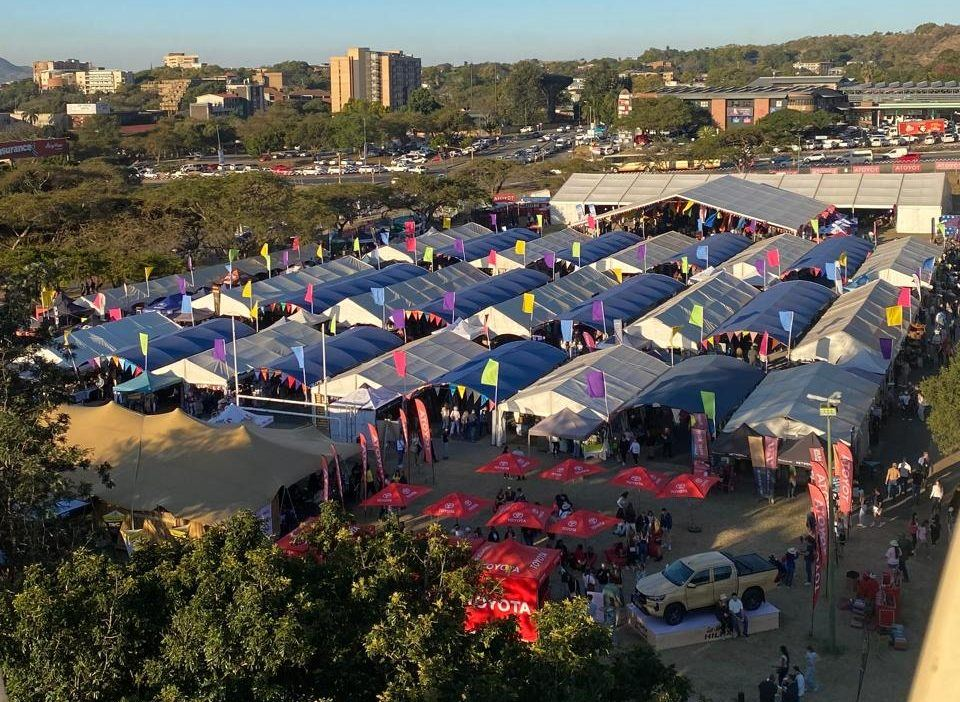

Festivals · Culture
Toyota Innibos National Arts Festival 2027
- Dates
- –
- Location
- Mbombela, South Africa
- Format
- In-person
- Category
- Culture
- Industry
- Afrikaans arts festival
- Organiser
- Innibos National Arts Festival
- Official website
- https://www.innibos.co.za/en/
About
2027 theme: Moments – Make every moment count. Official site: ticket sales open 31 December 2026. Official homepage graphics state '1 tot 4 Julie 2027' / 'Merk jou kalender … 1-4 Julie 2027'. South Africa dates are local (SAST, UTC+2, no daylight saving).
Topics: theatre, music, literature, Afrikaans arts.
No organiser attendance figure found on the official pages checked (24 Nov 2026). Ranked by an estimated size tier 'large' (our judgement from format, venue and scale, not an official number).